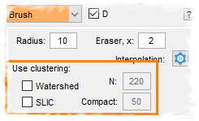

Did you know...

The brush tool can also be used to pick up clusters of pixels. To enable this, please enable check of these modes in the Brush panel:
Watershed
, for membrane encapsulated objects
SLIC
, for objects with distinct intensity
While selecting clusters, you can use the
Ctrl+Z
key shortcut to undo selection clusters one-by-one.